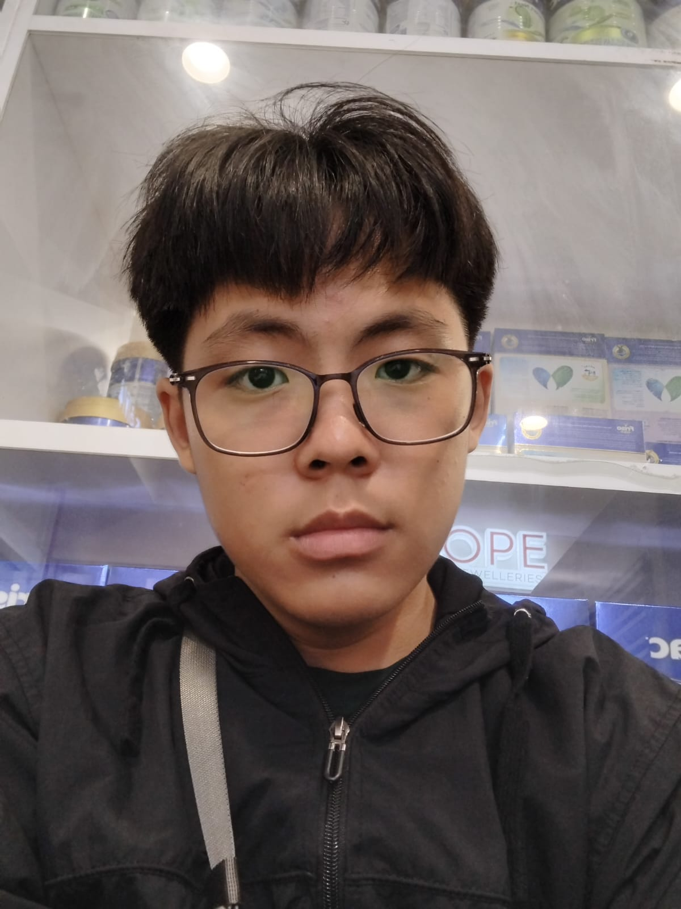

Evan Theryanto
X TKJ 2 Immanuel
Tentang Saya
Halo! Nama saya Evan Theryanto. Saya lahir pada tanggal 14 Februari 2011. Saya belajar di SMK Immanuel, kelas 10 TKJ 2. Saya tertarik dalam membuat website dan koding software yang menarik, unik dan bermanfaat untuk digunakan semua orang.
Cita-cita saya adalah menjadi IT Developer yang dapat membuat software yang dibutuhkan orang lain dan dapat berkontribusi dalam memajukan teknologi informasi. Maka, mulai dari sekarang saya harus belajar koding dan membuat website dengan kreatif dengan keras agar dapat memenuhi cita-cita saya.
Kembali ke Beranda